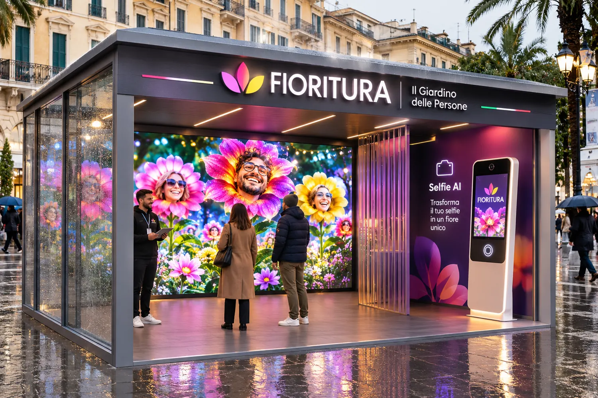

Esplorare, cercare e filtrare fiori sintetici; creare e cancellare un fiore locale con nome, forma e colore.
L’ESPERIENZA PROPOSTA
Dal tuo gesto
nasce una presenza.
Un percorso assistito, volontario e comprensibile. Prima si sceglie, poi si vede l’anteprima, infine si decide se il fiore può entrare nell’opera collettiva.
Segui il percorso ↓PRIMA DI INIZIARE
Il fisico è una proposta.
Il 2D è una demo reale.
Caricare foto, usare la fotocamera, generare un ritratto AI o pubblicare un fiore nel giardino condiviso.
01
ACCOGLIENZA
Entra, guarda, chiedi.
Una persona accompagna l’esperienza e presenta le alternative. Partecipare non è necessario per osservare il giardino.
- Ingresso gratuito proposto
- Informazioni prima di ogni scelta
- Percorso da verificare con il progetto di accessibilità

02
SCELTA VOLONTARIA
Con selfie oppure senza.
La postazione fotografica sarebbe facoltativa e utilizzabile soltanto dopo un’informativa dedicata e una scelta esplicita. Un’alternativa senza fotografia permette di contribuire attraverso colori e forme.
Per i minori, il percorso fotografico resta escluso finché tutele, responsabilità e procedure non saranno definite e implementate.
Nessun automatismo
Un originale non viene pubblicato. Un fiore non entra nel LED soltanto perché è stato generato.
03
ANTEPRIMA PRIVATA
Guarda prima di decidere.
Il ritratto floreale previsto viene mostrato alla persona: può approvarlo, rifarlo oppure interrompere il percorso. L’integrazione AI non è implementata nel sito dimostrativo.
04
MODERAZIONE E APPARIZIONE
Il fiore trova il suo posto.
Dopo conferma e controllo, il fiore approvato può apparire sulla parete LED collettiva. Un eventuale QR personale resta una funzione da progettare, non una promessa già attiva.
Il pubblico vede
Un paesaggio che cresce, non una galleria automatica di fotografie o identità.
UN’ESPERIENZA PER PIÙ PERSONE
Accessibile
per progetto, non per slogan.
La proposta include accoglienza umana, alternativa senza foto, testi leggibili, uso senza Canvas attraverso la lista dei fiori e controlli da tastiera. Percorsi, altezze, spazi di manovra, stimoli visivi e sonori dovranno essere verificati nel disegno tecnico e con prove reali.
Non dichiariamo oggi una conformità completa: è un obiettivo progettuale da collaudare con persone, dispositivi e allestimento definitivi.
L’ANTEPRIMA ONLINE
Il paesaggio è già esplorabile.
È illustrato, locale e non chiede fotografie.
Entra nel giardino 2D ↗